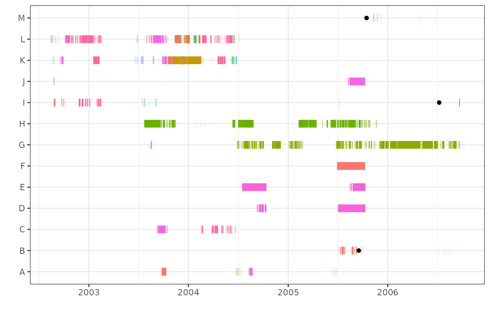

Note that potential mortalities or potential cases of tag expulsion
are referred to here as “mortalities” or “potential mortalities” for
simplicity.
There are two functions for identifying
potential mortalities: morts() and
infrequent().
morts() function
The morts() function uses thresholds derived from the
dataset to identify potential mortalities. There are four options for
identifying thresholds and mortalities, specified with the
method argument in morts(). The options “last”
and “any” use a threshold derived from the duration of residence events.
The option “cumulative” uses a threshold derived from cumulative
residence events (defined below). The option “all” applies both “any”
and “cumulative” (“last” is not called directly, as the results are also
captured by “any”).
All options rely on identifying the most recent station or location change for each animal that was detected by the array. The station change marks the last time the animal moved, and it is assumed that the animal was alive before this point.
The black points in the plot below show examples of the most recent
station changes. See stationchange() and the Digging
vignette for more information on how mort identifies station
changes.
Duration of residence events
After identifying the most recent station change, the longest single residence event that occurred before the station change is identified for each animal.
These long residences can be explored by the user using the
resmax() function (see the Digging
vignette for more information). The output will look like this:
| ResidenceStart | Station.Name | ID | ResidenceEnd | ResidenceLength.days |
|---|---|---|---|---|
| 2003-07-22 21:48:42 | 18 | H | 2003-09-21 12:08:52 | 60.59734 |
| 2005-08-14 05:01:50 | 4 | J | 2005-10-09 18:55:58 | 56.57926 |
| 2002-12-04 19:08:02 | 8 | L | 2003-01-17 16:40:29 | 43.89753 |
| 2003-09-13 13:25:38 | 4 | C | 2003-10-07 16:26:06 | 24.12532 |
| 2003-01-16 18:55:12 | 8 | K | 2003-02-08 16:31:25 | 22.90015 |
| 2003-09-24 16:56:36 | 1 | A | 2003-10-11 17:15:47 | 17.01332 |
The longest residence event (60 days in the table above) is used as the threshold.
There are two options for how to apply the threshold:
1. last
The threshold is applied to the last (most recent) residence event of each animal. Any residence events that are longer than the threshold are flagged as potential mortalities.
last_ex<-morts(data=events,type="mort",ID="ID",station="Station.Name",method="last")The black points in the plot below indicate the beginning of
residence events that were longer than the threshold, and were therefore
flagged in last_ex as run above.
2. any
The threshold is applied to any residence event that occurred after the most recent station change for each animal.
any_ex<-morts(data=events,type="mort",ID="ID",station="Station.Name",method="any")Note in the examples above that ID and station were specified for
type="mort". For other supported input types, there is no
default for ID and station, but they can both be specified as “auto” and
will be identified automatically by mort:
actel_ex<-morts(data=data,type="actel",ID="auto",station="auto",method="any")For type="manual", all required fields must be specified
directly (i.e., none can be “auto”):
manual_ex<-morts(data=data,type="manual",ID="ID",station="Station.Name",
res.start="ResidenceStart",res.end="ResidenceEnd",
residences="ResidenceLength.days",units="days",method="any")Cumulative residence events
Cumulative residence events are the length of time between when an
animal was first detected at a station and when it was last detected at
the same station, ignoring any gaps in detection (or cutoff
in residences()). The black points in the plot below
indicate the start and end of the longest cumulative residence events,
before a station change, for each fish.

The threshold for cumulative residence events is identified similarly
to that for single residence events. The cumulative residence events can
be explored by the user using the resmaxcml() function (see
the Digging
vignette for more information). The output will look like this:
| ResidenceStart | Station.Name | ID | ResidenceEnd | ResidenceLength.days |
|---|---|---|---|---|
| 2002-08-27 18:52:56 | 4 | J | 2005-10-09 18:55:58 | 1139.0021 days |
| 2003-09-22 00:20:28 | 1 | A | 2004-06-24 01:15:25 | 276.0382 days |
| 2003-07-22 21:48:42 | 18 | H | 2004-01-27 06:48:41 | 188.3750 days |
| 2002-09-27 18:03:11 | 8 | K | 2003-02-09 19:45:13 | 135.0709 days |
| 2002-10-15 19:55:49 | 8 | L | 2003-02-18 17:35:32 | 125.9026 days |
| 2004-02-16 18:10:21 | 8 | C | 2004-06-08 23:21:49 | 113.2163 days |
Note that the threshold in the example above is extremely large (1139
days). In this example, the large threshold is due to the drift and can
be corrected by applying drift within morts(). See the Drift
vignette for more information.
The threshold is then applied to cumulative residence events that occurred after the last station change to flag potential mortalities.
cumulative_ex<-morts(data=events,type="mort",ID="ID",station="Station.Name",method="cumulative")Notes on selecting a method
The methods outlined above may not all be relevant for all species
and acoustic arrays. Choosing an appropriate method is the
responsibility of the user. It is recommended to at least run all
methods and explore the results. The thresholds for cumulative residence
events are typically much longer than those for single residence events.
Running method="last" will identify potential mortalities
that may have occurred recently, before reaching the cumulative
threshold. Conversely, method="cumulative" may identify
potential mortalities from multiple short residence events, which each
on their own would not be long enough to be identified by
method="any". In this way, running
method="all" is the most conservative method.
all_ex<-morts(data=events,type="mort",ID="ID",station="Station.Name",method="all")
Output
The output of morts() is a dataframe, where each row is
the residence event where a flagged mortality was identified:
| ResidenceStart | Station.Name | ID | ResidenceEnd | ResidenceLength.days |
|---|---|---|---|---|
| 2005-07-02 17:02:03 | 5 | D | 2005-10-10 21:55:45 | 100.2039583 |
| 2004-07-15 21:09:22 | 5 | E | 2004-10-12 21:44:11 | 89.0241782 |
| 2005-06-28 21:12:58 | 1 | F | 2005-10-09 20:28:05 | 102.9688310 |
| 2006-02-04 21:25:18 | 17 | G | 2006-05-01 06:30:02 | 85.3782870 |
| 2003-07-14 08:42:08 | 20 | I | 2003-07-14 22:21:10 | 0.5687731 |
infrequent() function
The infrequent() function is used to identify potential
mortalities or expelled tags that may be located just outside the usual
range of a receiver, and are therefore detected briefly and
intermittently when conditions allow.
For this function, the thresholds are user-defined. The user has two options for defining the thresholds:
1. recent
For method="recent", the timeframe for assessing
infrequent residence events begins with the most recent residence event,
and extends back in time for the recent.period. If the sum
of the duration of all residence events in this timeframe is less than
the threshold, the animal is flagged as a potential
mortality. In the following example, animals are flagged if they were
detected for less than 60 minutes within one year (52 weeks) preceding
their most recent residence event.
recent_ex<-infrequent(data=events,type="mort",ID="ID",station="Station.Name",
method="recent",threshold=60,threshold.units="mins",
recent.period=52,recent.units="weeks")
2. defined
For method="defined", the timeframe for assessing
infrequent residence events is specified (defined) by the user with the
start and end arguments. In the following
example, an animal is flagged as potential mortality if the sum of the
duration of all residence events between 15 June and 15 October 2022 is
less than 60 minutes.
defined_ex<-infrequent(data=events,type="mort",ID="ID",station="Station.Name",
method="defined",threshold=60,threshold.units="mins",
start="2006-06-15",end="2006-10-15")Note that mort will assign the UTC timezone to start and
end. If you want to define the period of interest using
local times, it is recommended to convert local datetimes to POSIXt and
then convert the timezone to UTC:
start=as.POSIXct("2022-06-15",tz="America/Edmonton")
start
#> [1] "2022-06-15 MDT"
attributes(start)$tzone<-"UTC"
start
#> [1] "2022-06-15 06:00:00 UTC"The output of infrequent() is in the same format as the
output of morts() (see above). The output from one method
can be added to the output from the other, using the
morts.prev argument. See below for more information on
using morts.prev.
Options
Within morts() and infrequent(), there are
several optional arguments to customize the process:
Exclude single detections
In morts(), the argument singles specifies
if single detections are included as residence events. The default
setting is singles=TRUE, to include single detections.
Note there is no singles argument for
infrequent(), because the duration of residence events from
single detections is 0, and therefore does not contribute to meeting the
threshold.
Previously identified mortalities
The morts.prev argument in both morts() and
infrequent() specifies a dataframe of previously flagged
mortalities. The input dataframe to morts.prev must have
been previously generated by mort, or have the same column names, column
types, and in the same order as data. When new mortalities
are identified, animal IDs that were already included in
morts.prev are skipped. This option can be useful and make
processing more efficient when new detection data and residence events
are added to the dataset, whether from new animals that were tagged or
new detections from previously tagged animals. It can also be useful
when running multiple methods of identifying mortalities, since animal
IDs identified in one method are skipped when running subsequent
methods.
prev_ex<-morts(data=events,type="mort",ID="ID",station="Station.Name",morts.prev=recent_ex)Look backwards
For both morts() and infrequent(), there is
the option to look backwards (i.e., earlier) in the dataset. If the most
recent station change occurred before the flagged mortality (i.e., the
animal was detected earlier than the flagged mortality, at the same
station, and with no detections elsewhere), the start dates and times of
the flagged mortalities are shifted earlier. The default is
backwards=FALSE; however, it is more conservative to set
backwards=TRUE.
In the plot below, the black points show the flagged mortalities with
backwards=FALSE, and the blue points show the flagged
mortalities with backwards=TRUE:
Note, when method="cumulative" and there is no
seasonality, cumulative residence events will cover all consecutive
detections at a given station, and backwards is
unnecessary.
Drift and season
In some systems, an expelled tag or a tag from a dead animal may seem
to move, due to currents or tides, or if the tag is located within range
of two overlapping receivers. Both morts() and
infrequent() include an option to specify stations or
locations where drift may occur and to consider drift in identifying
mortalities. For more information, see the Drift
vignette.
For some species or systems with seasonal patterns in movement or
residency, it may be desirable to only consider specific seasons or
periods of time when identifying mortalities. morts()
includes an option to specify dates to calculate thresholds and flag
mortalities. For more information, see the Seasonality
vignette. Note there is no option to apply season to
infrequent(), but the season or period of interest could be
used as the defined period with method="defined", as well
as start and end arguments.